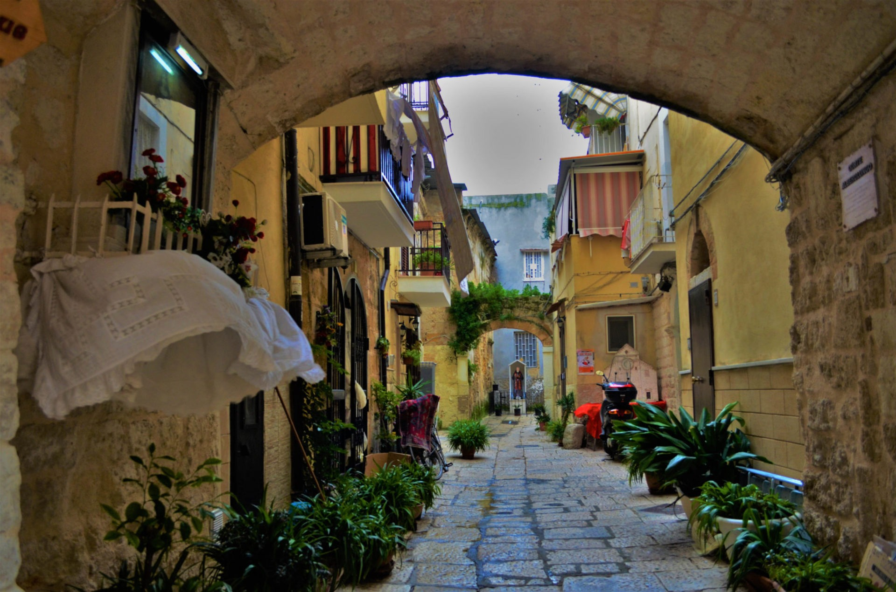
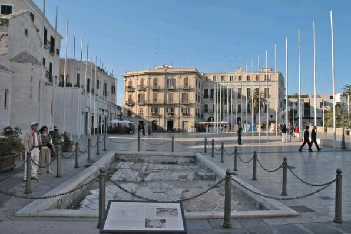

БАРИ - ИТАЛИЯ
"Senatus Populusque Romanus"

- История
- Забележителности:
- Туристически забележителности близо до града
По легенда, Бари е основан през 9 век пр.н.е. от финикийските мореплаватели, които са наречени "пеперуди" поради формата на пристанището на града. През следващите векове Бари е бил населен от различни цивилизации, включително гърци, римляни и готи.
През средновековието, Бари става значимо градово кралство. През 11 век градът е завзет от норманните рицари, предводени от Роберт Гискер. Те превръщат Бари в столица на Кралство Сицилия и изграждат голям брой крепости, църкви и палати, които са днес значими архитектурни забележителности.
През Ренесанса Бари цъфти като икономически и културен център. Градът разполага със значителна търговска флотилия и е важен търговски пункт в Средиземноморието. Културното възраждане на града се отразява върху архитектурата, изкуството и литературата.
През 19 век Бари започва да се развива като промишлен град, като основните отрасли са свързани със селското стопанство, рибарството и търговията. Градът преживява значителен растеж през 20 век, когато се развиват нови индустрии и инфраструктура.
Днес Бари е модерен град, който запазва своята богата история и наследство. Той е известен със своите живописни стари улици, средновековната си крепост и катедралата на Свети Никола, където се смята, че са погребани останките на николай Мирликийски, покровител на града.
.jpg)